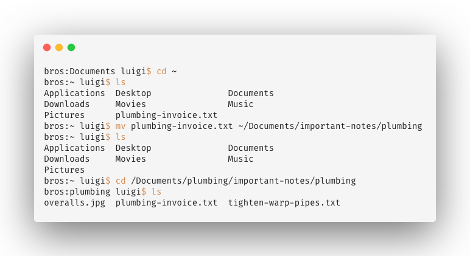
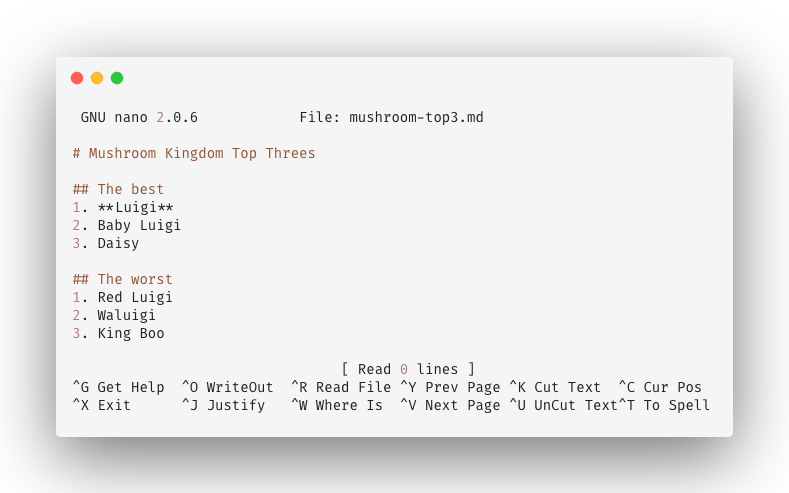

bros:~ luigi$
tl;dr
This post is a basic introduction to the command line, focusing on macOS’s Terminal. Here are some commonly-used commands:
| Command | Example | Short explanation |
|---|---|---|
pwd |
pwd |
Print working directory |
cd |
cd <filepath> |
Change directory |
ls |
ls |
List folder contents |
mkdir |
mkdir <folder name> |
Make directory (folder) |
touch |
touch <filename> |
Create a file |
nano |
nano <filename> |
Open Nano editor |
open |
open <filename> |
Open a file in its default program |
mv |
mv <filename> <filepath> |
Move a file |
rm |
rm <filename> |
Remove (delete) a file |
man |
man <command name> |
Manual for a command |
New Year’s R-solution
People shared recently on Twitter their R goals for 2019 (see Maëlle Salmon’s post). Some of them referenced the use of Git and GitHub (see Jason Baik’s scraped dataset) for version-control of their projects.
It wasn’t that long ago that I began working with the command line, Git and GitHub. Now seems a good time to record what I learnt and maybe someone else will find it useful, or suggest better approaches.
I’m splitting this into two posts: one introducing the basics of the command line and one about a basic Git workflow.
In these posts I assume that you:
- have little-to-no understanding of the command line and Git commands, but some experience of coding
- want to version control your R project
- intend to store your version-controlled files in the cloud with GitHub
- want to interact with Git via the command line, rather than with a Graphical User Interface (GUI)
- are using a Mac and will access the command line via the Terminal application
These are relatively narrow constraints, but there will likely be some overlap with your particular configuration.
The command line
Our goal is to start writing Git commands at the command line. Before we get to Git, we need to know what the command line is and get some experience of working there.
You probably interact with your computer primarily via a Graphical User Interface (GUI) composed of windows and visual representations of files and folders, and probably use a mouse to do this.
But there’s another way: you can write text commands directly to your computer to manipulate files and folders. One benefit is that you can save and re-execute commands in a script, which is much more reproducible than an unknown series of mouse-based interactions.
What language are we going to use to communicate? We’ll be writing in our computer’s default scripting language, called bash. In this post we’ll be looking at a few basic commands.
Terminal
Open the Terminal application (tap command and space to search for it). Terminal acts as a Command Line Interface (CLI): a place where you can chat with your machine.
Terminal is a simple application where you type commands and execute them. You’re presented with the prompt, which is the form <computer name>:<current directory> <user>$. For example:
The prompt will appear each time your computer is awaiting an instruction. You just need to write your command after the $ and hit Enter.
Where are we?
The commands we input are going to affect the current folder we’re in, or other files and folders relative to it.
Where are you when you start Terminal? The prompt helps you orient yourself: see the <current directory> bit of <computer name>:<current directory> <user>$.
When you start, the prompt will show the tilde ~ by default. This is a shortcut symbol for your ‘home’ directory, which on a Mac will be set to the path /Users/<your-username>.
We can prove this by typing pwd at the prompt and hitting the Enter key.
bros:~ luigi$ pwd
/Users/luigiThis command prints the path for the current working directory. The folder we’re working in at any given moment is called ‘the working directory’.
Look around with ls
We can look at the contents of our current working directory with ls, which means ‘list the files’.
bros:~ luigi$ ls
Applications Desktop Documents
Downloads Movies Music
Pictures plumbing-invoice.txt It holds some folders and a text file. This command is analogous to double-clicking a folder to open it and look inside.
Flags
We can go one better: we can add ‘flags’ to the command. These are arguments prefixed with a hyphen that change the command’s default behaviour. We’re going to ask for all the files and folders (some are hidden!) with -a and also we’ll use -p to append the folders with a forward slash to make them more obvious.
bros:~ luigi$ ls -a -p
./
../
.luigi-profile
.gameboy-horror-token
.poltergust-key
Applications/
Desktop/
Documents/
Downloads/
Movies/
Music/
Pictures/
plumbing-invoice.txtSo now can see all the files, including the hidden ones. Hidden files are often settings or profiles for various programs, or tokens stored for API access. One example of a hidden file for R is an .Rprofile.
You can see a description of the command and the list of available flags using the man command. For example, try man ls to learn about the list command. Sometimes the contents of the man file don’t fit the screen; keep hitting return until the bottom, or tap q to quit.
Create/edit a file with touch/nano
Let’s create a file in our current working directory with the touch command and then convince ourselves it’s there by listing the folder contents. I’m choosing to write a Markdown file with the .md extension, but you could just as easily have specified a .txt text file, for example.
bros:Documents luigi$ touch mushroom-top3.md
bros:Documents luigi$ ls -p
coin-balance/ mushroom-top3.md monty-mole-fanfic.txt
moustache-wiggle.gif plumbing/ star-locations/Okay great, but the file is empty. How do we write something in it? Well, you could use open characters.md at the prompt to open the file in your default text editor (TextEdit or something), but we can also write text from within Terminal itself. Perhaps the simplest way is to use the Nano editor, which you can think of as a text editor built into Terminal.
You just need to type nano <file name>.
bros:important-notes luigi$ nano mushroom-top3.mdThe prompt will disappear and you’ll see a header saying File: characters.md. You’re now editing this file with Nano. Start typing.

The Nano text editor running from the command line
Notice the options at the bottom of the window. We can exit Nano with ^ and x (‘control’ and ‘x’ keys). You’ll be asked if you want to save; hit Y for yes. Then you’ll be asked for a File name to write: characters.md. You can edit the name or hit Enter to confirm. The content is now saved.
Create a folder with mkdir
As well as files, the command mkdir <folder name> will create a new folder in our current working directory. We can switch to the new folder with cd and can again convince ourselves by looking at the pwd to print our working directory.
bros:Documents luigi$ mkdir new-games-starring-luigi
bros:Documents luigi$ cd
bros:new-games-starring-luigi luigi$ pwd
/Users/luigi/Documents/important-notes
bros:new-games-starring-luigi luigi$ ls
bros:new-games-starring-luigi luigi$Note that ls on an empty directory will return nothing.
Move your files with mv
Let’s say we have a rogue text file in our home directory (remember this is denoted with the tilde, ~) that should really be in a subfolder of Documents/. The command mv allows us to move it. It’s like dragging and dropping a file from one folder into another.
You can specify this in the form mv <filepath> <filepath> to move files to and from any path, or navigate with cd to the folder containing the file and use the form mv <file> <filepath>. The code below does the latter, using cd and ls to move between folders and show where the file is.
bros:Documents luigi$ cd ~
bros:~ luigi$ ls
Applications Desktop Documents
Downloads Movies Music
Pictures plumbing-invoice.txt
bros:~ luigi$ mv plumbing-invoice.txt ~/Documents/important-notes/plumbing
bros:~ luigi$ ls
Applications Desktop Documents
Downloads Movies Music
Pictures
bros:~ luigi$ cd /Documents/plumbing/important-notes/plumbing
bros:plumbing luigi$ ls
overalls.jpg plumbing-invoice.txt tighten-warp-pipes.txtDelete with rm
While we’re in this folder, we might want to prune our files a bit. You can remove files with the rm command.
bros:plumbing luigi$ ls
overalls.jpg plumbing-invoice.txt tighten-warp-pipes.txt
bros:plumbing luigi$ rm tighten-warp-pipes.txt
bros:plumbing luigi$ ls
overalls.jpg plumbing-invoice.txtNext steps
So we should have enough knowledge now to navigate and manipulate folders. This will be extremely helpful when we start using Git commands at the command line in part two of the ‘Git going’ series.
Environment
Session info
Last rendered: 2023-08-04 08:37:50 BSTR version 4.3.1 (2023-06-16)
Platform: aarch64-apple-darwin20 (64-bit)
Running under: macOS Ventura 13.2.1
Matrix products: default
BLAS: /Library/Frameworks/R.framework/Versions/4.3-arm64/Resources/lib/libRblas.0.dylib
LAPACK: /Library/Frameworks/R.framework/Versions/4.3-arm64/Resources/lib/libRlapack.dylib; LAPACK version 3.11.0
locale:
[1] en_US.UTF-8/en_US.UTF-8/en_US.UTF-8/C/en_US.UTF-8/en_US.UTF-8
time zone: Europe/London
tzcode source: internal
attached base packages:
[1] stats graphics grDevices utils datasets methods base
loaded via a namespace (and not attached):
[1] htmlwidgets_1.6.2 compiler_4.3.1 fastmap_1.1.1 cli_3.6.1
[5] tools_4.3.1 htmltools_0.5.5 rstudioapi_0.15.0 yaml_2.3.7
[9] rmarkdown_2.23 knitr_1.43.1 jsonlite_1.8.7 xfun_0.39
[13] digest_0.6.33 rlang_1.1.1 evaluate_0.21 Reuse
CC BY-NC-SA 4.0